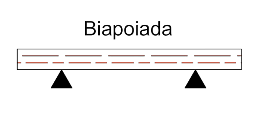
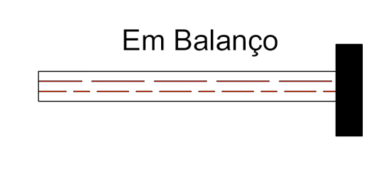
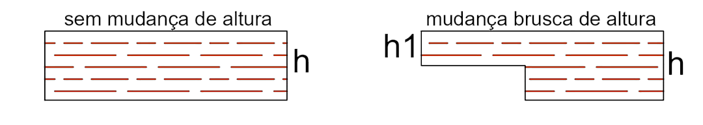
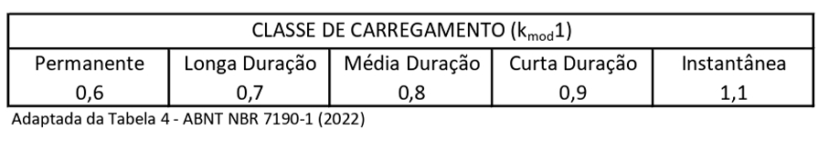
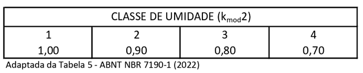
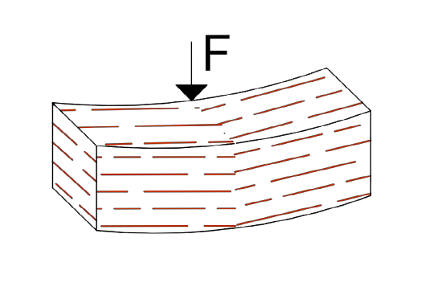
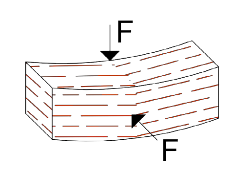
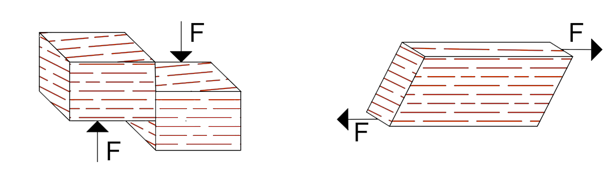
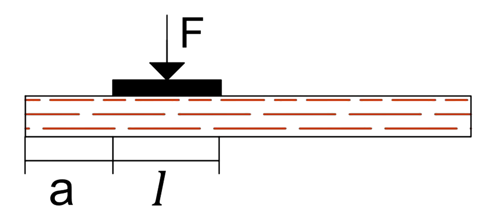

Geometria
Vigas são elementos estruturais lineares que muitas vezes podem ser encontradas no sistema laje-viga-pilar, sendo assim, um elemento que: transmite na interface laje-viga, principalmente, forças de cisalhamento e momentos de flexão, ou forças de compressão na interface viga-pilar, como é o caso de vigas biapoiadas.
Dessa forma, para saber como a viga se comporta quando exposta a essas forças, é necessário conhecer suas características geométricas.
Tipo de Viga
Viga Biapoiada é uma viga que possui suas duas extremidades apenas apoiadas o que não permite a transmissão de momento para os apoios.

Viga em Balanço é uma viga que possui apenas uma de suas extremidades engastadas, trasnmitindo momento, e a outra extremidade sem qualquer tipo de vinculação.

Mudança de Altura
Para realisar o dimensionamento efetivo da viga, é necessário saber se ela apresenta entalhes, pois esse tipo de mudança diminui o quanto de carga a peça pode aguentar, a ponto da norma NBR 7190(2022) indicar a colocação de pinos de metais a partir de uma certa diferença de altura.

Restrições
Para que o dimensionamento seja efetuado, duas condições devem ser atendidas: seção transversal ou, neste caso, área, de pelo menos 5000 mm2 e uma espessura, o tamanho da base, de 50 mm.
Resistência ao Cálculo
A Resistência ao Cálculo é um valor utilizado como comparativo, sendo um limite genérico ao qual, a flexão, cisalhamento e compressão podem alcançar. Para determiná-la é necessário conhecer o tipo de carregamento, a classe de umidade e a classe de resistência.
Tipo de Carregamento
A classe de carregamento é determinada de acordo com o tempo que a estrutura estará sofrendo uma ação considerada principal.

Classe de Umidade
O objetivo da classe de umidade é ajustar as propriedades de resistência e rigidez decorrentes das condições do ambiente na qual a árvore cresceu. Ela é dividida em 4 classes de acordo com o percentual de umidade do local.

Classe de Resistência da Madeira
A classe de resistência, é um modo de padronizar madeiras de diferentes origens, divididas entre coníferas (gimnospermas) e folhosas (angiospermas), em classes que reflitam suas propriedades determinadas por meio de experimentos. Existem duas categorias:
Corpos de Prova Isentos de Defeito (madeira nativa)
Peças Estruturais (madeira de reflorestamento)
Flexão Simples
A flexão em vigas de madeira ocorre quando ela é submetida a um momento fletor, por ser simples não serão consideradas solicitações normais, e o corpo sofre uma curvatura de tal maneira que esforços de compressão são formados na parte superior da viga, esforços de tração na sua parte inferior e esforços cortantes na interface entre as fibras inferiores e superiores.
Ela pode ser dividida em dois tipos:
Reta que é quando o plano de ação da força contém um eixo central de inércia.

Oblíqua que é quando o plano de ação da força não contem nenhum dos eixos centrais de inércia e necessita ser decomposta na direção de cada eixo.

Cisalhamento
O cisalhamento é o nome dado ao resultado da ação de forças cortantes que causam o deslocamento, simultâneo, do corpo em direções opostas causando uma ruptura.
Além disso, caso as vigas sejam biapoiadas, pode-se aplicar um fator de correção que atenuará o efeito de forças cortantes próximo ao apoio.

Compressão Normal às Fibras
A Compressão em vigas de madeira, ocorre quando uma força concentrada é aplicada na viga, sendo, portanto, muito comum na interface pilar, ou qualquer tipo de apoio, viga.
Por isso, parâmetros como a extensão do carregamento se torna importante para o dimensionamento.

Estabilidade Lateral de Vigas
Os critérios de verificação da instabilidade lateral de vigas não são definidos por norma, sendo uma verificação experimental, podendo ser dispensada em 3 situações:
Quando se está avaliando uma viga de seção retangular com suas rotações nas seções extremas (apoios da viga) impedidas.
Quando a distância entre pontos adjacentes da borda comprimida com deslocamentos laterais impedidos atende uma condição que pode ser calculada.
Ou, caso a condição acima não seja atendida, pode-se realizar também uma segunda verificação dependente do máximo valor de cálculo da tensão.
Estado Limite de Serviço
O Estado de Limite de Serviço, também chamado de Estado Limite de Utilização, é uma verificação de segurança que analisa se há comprometimento na durabilidade, utilidade ou estética de uma estrutura.
Para a verificação dos Estados Limites de Serviço, deve-se calcular o deslocamento ou a vibração aos quais a peça pode estar sujeita e em seguida verificar se o número obtido está abaixo dos limites estabelecidos, que são determinados pela divisão da largura da peça por um número pré-determinado de acordo com a situação.
Esses deslocamentos ou vibrações acontecem devido aos efeitos de ações que podem possuir um caráter permanente ou passageiro, chamado de variável, e são demonstrados por flechas que correspondem ao quanto a estrutura se deslocou devido à aquela ação.
Em relações aos Estados Limites de Vibração, as construções devem ser feitas de modo a evitar vibrações excessivas na estrutura, no caso de pisos sobre os quais pessoas andem regularmente. A frequência natural de vibração dos elementos da estrutura não deve ser inferior a 8 Hz.